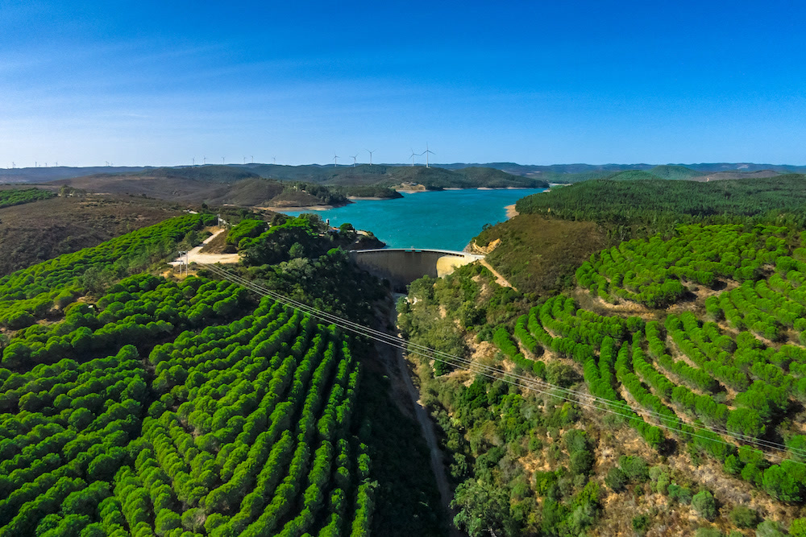

Western Algarve, Portugal
The location
A hidden valley
A name with three decades of history behind it
Moinhos Velhos means “the old mills.” Long before the Barragem da Bravura dam was built, this 16-hectare valley at Cotifo, near Barão de São João, was a working water mill — neighbouring farmers brought their produce here to be ground, a tradition that runs back hundreds of years.
Today the valley still feels like its own small world: terraced gardens, a scatter of stone-and-timber buildings, and hills on every side that hold the quiet in.

More than scenery
A setting that does some of the work for you
Quartz-laced ground
Thousands of small quartz crystals sit naturally in the soil throughout the valley — guests often remark on the energy here.
Beside the Barragem
The retreat sits right against the Barragem da Bravura dam, in a fold of hills that keeps the outside world genuinely out of earshot.
15 minutes from Lagos
Close enough for an easy pick-up, far enough that you’ll hear birdsong and crickets rather than traffic.
Spared in 2003
Wildfires that devastated much of the surrounding region that year burned right up to our boundary — and left the valley itself untouched.
Special energies
A valley with an energy of its own
Tucked away from the tourist coast in a fold of its own, Moinhos Velhos has always felt different — guests often say they sense it before anyone explains it. Our founders, Frank and Anne Karine, couldn’t name it at first either. Later they discovered the ground here is threaded with thousands of small quartz crystals, and — in the tradition of the Damanhur community in Italy — that the valley sits directly on one of the twelve synchronic lines: streams of energy said to circle the Earth, joining at only two points, one at Damanhur and the other in Tibet.
In that tradition the lines are described as rivers of energy linking all living things — amplifying emotion and intention and carrying them between far-distant points. Anne Karine fostered the connection herself, visiting Damanhur’s spiritual, scientific and artistic community regularly over the years.
To hear the creation story of Moinhos Velhos told in full, watch the film in our gallery.
The founders also came to see Moinhos Velhos as one of the world’s centres of Light. If that thread speaks to you, you’ll find kindred stories in the books of Eileen and Peter Caddy of Scotland’s Findhorn Foundation, whose work inspired traditions still alive here — including the dedication of part of our valley to the nature spirits. Richard, one of our facilitation team, spent time living at Findhorn in the early 2000s.
Chris on the valley — a very special place.

Included every week
Nature immersion, then a day at the coast
Days here run to the rhythm of the valley — birdsong mornings, warm afternoons in the gardens, star-thick nights with none of the light pollution you get nearer the coast. Once a week the whole group heads out together for a trip to a beautiful local beach or beauty spot, included in every programme.
- 16 hectares of private valley, terraced gardens and a 160 m² greenhouse
- Twelve buildings tucked into the hillside, none of them overlooked
- A weekly group trip to the coast or a local beauty spot
- Quiet enough to hear the dam and the birds — and little else
Getting here
Closer than the quiet suggests
We’re fifteen minutes from Lagos, twenty from the nearest beaches, and just one hour from Faro Airport — which has direct flights from most major European cities. Tell us your flight number and we’ll be there to meet you; pick-up in Lagos itself is always free.
- One person, Faro transfer€80 each way
- Two people, Faro transfer€45pp each way
- Three or more, Faro transfer€35pp each way
- Pick-up in LagosFree
Finding us
- By air — Faro is an international airport with direct flights from most major European cities; otherwise connect via Lisbon.
- By road — the A22 motorway is ten minutes away, so we get the convenience without the noise. From there it’s a short run on local roads to the Barragem.
- By bus or train — Lagos has connections to major towns across the Algarve and beyond, with a short transfer to finish the journey.
In motion
See the valley for yourself
Short films straight from the retreat — the gardens, the temple, and the people who make the place what it is.
A quiet worth travelling for
See the full programme, or check live availability and reserve your place with a €350 deposit.